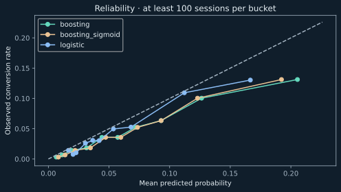
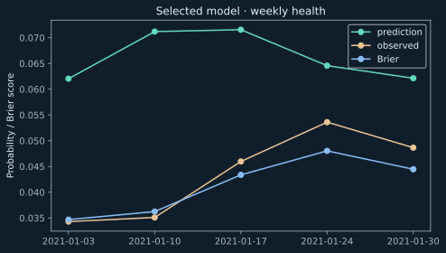
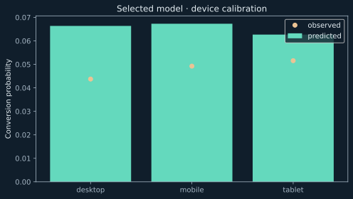

{{ '%.1f'|format(r.experiment.observed_bottleneck.dropoff_rate*100) }}%
Largest funnel loss
Product view → add-to-cart
Funnel evidence ↓REAL GOOGLE MERCHANDISE STORE GA4 DATA
A production-oriented workflow for product diagnostics, experimentation, conversion modeling, calibration, and model-health monitoring.
BigQuery · SQL · dbt · Python · scikit-learn · Airflow {{ r.start[:4] }}–{{ r.start[4:6] }}–{{ r.start[6:] }} → {{ r.end[:4] }}–{{ r.end[4:6] }}–{{ r.end[6:] }}
Real execution · parameterized replay · temporal validation · probability diagnostics · weekly model health
Product diagnostics → Experiment design → Conversion modeling → Calibration → Model health → Airflow replay
{% if execution %}{{ '%.2f'|format(execution.tables.staged_events/1000000) }}M staged events · {{ '%.0f'|format(execution.tables.sessions/1000) }}K sessions · {{ execution.task_count }}-task Airflow DAG · replay idempotency verified
{% endif %}{{ '%.1f'|format(r.experiment.observed_bottleneck.dropoff_rate*100) }}%
Product view → add-to-cart
Funnel evidence ↓{{ '%+.2f'|format(device_case.within*100) }} pp
The investigated spike was concentrated within device groups.
{% else %}—
No anomaly met the monitoring rule in this replay window.
{% endif %} Conversion diagnosis ↓{{ plan.duration_days }} days
{{ '%.0f'|format(plan.power*100) }}% power · {{ '%.0f'|format(r.experiment.relative_mde*100) }}% relative MDE
Prospective design ↓{{ '%.1f'|format(r.overview.events/1000000) }}M
Google Merchandise Store event data
Data & provenance ↓WHAT I WOULD DO NEXT
Observed comparisons; the experiment is prospective. Definitions & boundaries · Generated evidence · Source code ↗
{% else %}{{ r.reason }}
01 / FUNNEL EVIDENCE
The primary funnel counts sessions that reach each stage in strict timestamp order. User reach counts distinct observed users at each event, without assuming a sequence.

{{ '{:,}'.format(r.overview.purchase_sessions) }} sessions contained a purchase event; the strict funnel counts only complete ordered journeys.
Download funnel counts and denominators ↗{% else %}ANALYSIS CONTRACT
Proposed sequence. Existence and counts remain unverified. Publication fails if a required event is absent.
{% endif %}02 / CONVERSION DIAGNOSIS
A symmetric rate decomposition separates changes in segment composition from changes in segment conversion. Contributions reconcile exactly to the overall rate change.
{{ r.investigation.status }}
{% if r.investigation.cases %}{{ r.investigation.date }}: {{ '{:,}'.format(r.investigation.overall.current.purchase_sessions) }} purchase sessions / {{ '{:,}'.format(r.investigation.overall.current.sessions) }} sessions. Baseline: {{ '{:,}'.format(r.investigation.overall.baseline.purchase_sessions) }} / {{ '{:,}'.format(r.investigation.overall.baseline.sessions) }} across {{ r.investigation.baseline_dates|join(', ') }}.
The two most recent matched weekdays give a {{ '%.2f'|format(r.investigation.overall.recent_weekday_sensitivity.conversion*100) }}% comparison rate. The change persists when the older holiday dates are omitted. Table entries decompose session conversion, in percentage points.
| Dimension | Total Δ (pp) | Mix (pp) | Within (pp) |
|---|---|---|---|
| {{ c.dimension }} | {{ '%+.3f'|format(c.delta*100) }} | {{ '%+.3f'|format(c.mix*100) }} | {{ '%+.3f'|format(c.within*100) }} |
A case is selected from a real conversion flag. Until observed aggregates exist, there is no defensible period to diagnose.
{% endif %}Dimensions are separate views of the same change, not additive causes. Product-category coverage is audited separately at transaction grain.
03 / EXPERIMENT DESIGN
The largest observed stage dropoff defines the candidate product change. Persist assignment at the user level and measure the next stage in the first eligible session.
Baseline, sample size, and duration come from eligible-user aggregates—not session counts substituted into a user-randomized test.
Read the experiment protocol ↗DESIGN · NO TREATMENT RESULTS
{% if verified %}{{ r.experiment.product_change }}
{{ r.experiment.status }}
{% if r.experiment.scenarios is defined %}Observed eligible-user baseline: {{ '%.2f'|format(r.experiment.baseline*100) }}%. Planned relative MDE: {{ '%.0f'|format(r.experiment.relative_mde*100) }}%.
| Power | Users / arm | Days |
|---|---|---|
| {{ '%.0f'|format(s.power*100) }}% | {{ s.per_arm }} | {{ s.duration_days }} |
{{ r.experiment.converted_users }} progressions / {{ '{:,}'.format(r.experiment.eligible_users) }} first-eligible users across {{ r.experiment.baseline_days }} days ({{ '%.1f'|format(r.experiment.daily_eligible_users) }} users/day).
{{ r.experiment.decision }}
{% endif %}{% else %}Sample-size and duration scenarios will appear after execution. No uplift, treatment performance, or experimental outcome has been invented.
{% endif %}04 / RETENTION
Exact-day return after first observation, grouped by mature cohorts, initial device, geography, acquisition fields, and first-session behavior.
Users without enough follow-up are excluded separately at each horizon. Initial behavior is frozen; lifetime purchases never become a historical cohort attribute.
First observation is not signup. Browser identifiers cannot establish cross-device loyalty.

Cells use eligible users only; blank cells are censored or below the sample threshold. Partially mature weeks can have different denominators by horizon.
Inspect retention cohorts ↗{% else %}CENSORING RULE
Heatmap cells appear only after the cohort counts have been generated and validated.
{% endif %}05 / MONITORING
A trailing median and median absolute deviation identify unusual users, sessions, conversion, transactions, revenue, and checkout completion. The current day never enters its own baseline.
Short history and repeated comparisons limit interpretation. Flags open an investigation; they do not establish an outage.
| Date | Metric | Robust score |
|---|---|---|
| {{ a.date }} | {{ a.metric }} | {{ '%.2f'|format(a.score) }} |
No strong anomalies under this rule. No incident is asserted.
{% endif %}{% else %}HISTORICAL REPLAY
The detector is ready to evaluate real daily aggregates. Missing measurements are not zero, and a static historical source does not trigger a freshness alert.
{% endif %}06 / EVIDENCE & BOUNDARIES
Funnel friction, repeat behavior, and changes in performance—connected to a concrete next action.
{{ "PROSPECTIVE DESIGN" if loop.last else "OBSERVED FINDING" }}
{{ f.evidence }}
{{ f.interpretation }}
Next action
{{ f.action }}
{{ r.reason }} The next decision is to authenticate, run the audit, and verify whether the observed event coverage supports the proposed funnel. This page does not substitute synthetic behavior for missing evidence.
View the one-time setup07 / CONVERSION PROPENSITY MODELING
Business question: given information available at the first product view, how well can we estimate whether the session eventually converts?
PREDICTION CONTRACT
Features stop at the first view. Purchase outcomes, later events, and raw user or session identifiers cannot enter the estimator.
FEATURE FAMILIES
Device and acquisition context, visitor state, time, early engagement, and early product interaction.
75,414 eligible sessions in chronological order. The final test remained untouched until the predefined validation log-loss rule selected uncalibrated histogram gradient boosting.
08 / FINAL-TEST COMPARISON
Boosting ranks sessions better. Logistic regression is better calibrated in the later test period by Brier score and ECE. Selection still follows the validation rule defined before final-test evaluation.
Selected on validation log loss; final test preserved for evaluation only.
| Model | ROC-AUC | PR-AUC | Log loss | Brier | ECE | Decile lift |
|---|---|---|---|---|---|---|
| {{ label }}{% if loop.index==2 %}Selected on validation log loss{% endif %} | {{ '%.6f'|format(x.roc_auc) }} | {{ '%.6f'|format(x.pr_auc) }} | {{ '%.6f'|format(x.log_loss) }} | {{ '%.6f'|format(x.brier_score) }} | {{ '%.6f'|format(x.calibration_error) }} | {{ '%.4f'|format(x.top_decile_lift) }}× |
22,408 final-test sessions; observed conversion {{ '%.2f'|format(boosting.conversion_rate*100) }}%. Metrics: generated JSON.
09 / CALIBRATION
In the highest-risk bucket, boosting predicted higher conversion than was observed in the later period.
This is temporal calibration degradation to monitor, not a model failure. It matters whenever probabilities drive forecasts, thresholds, or intervention capacity.
Download calibration buckets ↗
Ten equal-frequency buckets per candidate; generated from real final-test predictions.
10 / MODEL HEALTH
Five weekly windows separate ranking quality from probability error. Categorical unseen rates were zero.
The initial partial-week day-of-week PSI reflects incomplete weekday composition. Later notable distribution changes include seconds-to-view PSI {{ '%.3f'|format(seconds_drift.value) }} and unique-products PSI {{ '%.3f'|format(products_drift.value) }} in the final partial week; neither is automatically a production incident.
Download weekly metrics ↗
Performance and calibration are checked as a time series, not reduced to one aggregate score.
11 / SEGMENT DIAGNOSTICS
The summary cards report observed conversion prevalence. The chart reports model calibration and performance by segment. Both are descriptive and predictive comparisons, not causal effects.

Inspect all supported segments ↗12 / VERIFIED EXECUTION
The same code path ran against the public GA4 BigQuery export and through Airflow under WSL2.
{{ '{:,}'.format(execution.tables.sessions) }} sessions · {{ '{:,}'.format(execution.tables.feature_rows) }} model rows
Airflow {{ execution.airflow_version }} · full DAG in {{ '%.0f'|format(execution.full_run.duration_seconds) }} sec
Identical row counts and full-table fingerprints
Warehouse · leakage/splits · calibration integrity
Typed start date, end date, and model-branch parameters reproduce bounded historical windows.
Airflow coordinates tasks, two retries with a two-minute delay, and validation gates. Training logic remains in Python.
Final publication waits for analytics diagnosis and the model report. Every query is dry-run and capped before execution.
Concise execution record · detailed job IDs, bytes, fingerprints, and task evidence remain in the repository execution log.
REFERENCE / METRIC CONTRACTS
{{ x.numerator }}{% if x.denominator != 'None' %} / {{ x.denominator }}{% endif %}
{{ x.grain }}| Metric | Definition | Boundary |
|---|---|---|
| {{ x.name }}{{ x.grain }} | {{ x.numerator }} / {{ x.denominator }} | {{ x.caveat }} |
Full SQL, exclusions, and denominator rules: metric and data contracts ↗
13 / REPRODUCIBILITY
Start with committed artifacts; add credentials only for real BigQuery or Airflow replay.
01
Install the project, regenerate the static site, and run the test suite without cloud credentials.
python -m src.pipeline site02
Authenticate, review the bounded dry-run estimate, then execute with the 5 GiB per-query guard.
python -m src.replay estimate03
Use the documented WSL/Linux environment to parse or execute the parameterized historical DAG.
python scripts/verify_airflow.pyExact setup, environment variables, bounded replay commands, and full-model instructions are in the README and operations guide.
14 / LIMITATIONS
Historical scope
Finite, obfuscated public GA4 data over a limited window; there is no live traffic or freshness signal.
Prediction boundary
Features are constrained to the first product view. Repeat users and sessions are not fully independent.
Calibration
The selected model overpredicts in the later period, so its probabilities require monitoring and recalibration assessment.
Operations
There is no production serving endpoint or automatic retraining deployment.
Causality
Observed segment and model relationships are predictive, not treatment effects. The proposed product experiment remains prospective.
Identity
Pseudonymous browser identifiers cannot establish durable people-level or cross-device identity.
Transaction scope: {{ r.overview.invalid_transaction_events }} purchase events have invalid transaction IDs. {% for row in r.transaction_diagnosis %}{% if row.status=='conflicting' %}{{ row.transaction_ids }} conflicting IDs ({{ row.source_purchase_events }} events) are quarantined.{% endif %}{% endfor %} Published revenue is the accepted, deduplicated subset.
{% endif %}Google’s dataset documentation ↗